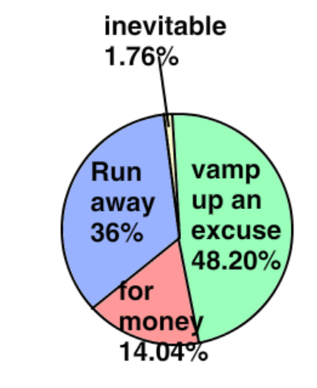

핑계라고 예상하는 이유
학원에서 도망갈 수 있다.
선생님이 그토록 싫어하는 학생들을 안 볼 수 있다.
정부에게서 농사를 이유로 돈을 뜯어낼 수 있다.
사람들이 내는 세금을 마음대로 쓸 수 있다.
정부에서 개인 비용을 준다(약 몇 십 만원)
정부에서 무료로 1억 5천만원을 준다.
이러한 이유로 인하여 선생님은 딸기 농사하러 가는 것이 아니라! 딸기 농사하러 도망간다고 생각한다.
자료
그래서 CMS 코딩을 다니는 학생 136명을 상대로 직접 설문조사를 한 결과

(출처: www.whereisthecmscodingxfile.com)
98.24%의 학생들이 선생님이 도망간다 또는 선생님이 핑계를 댄다고 답변했다.
또 CMS에 다니는 A씨(14세)를 상대로 인터뷰를 한 결과 선생님은 도망가는 것이고 돈을 뜯어내려는 행위이며 딸기 농장은 핑계일 뿐이다.라고 답했다.